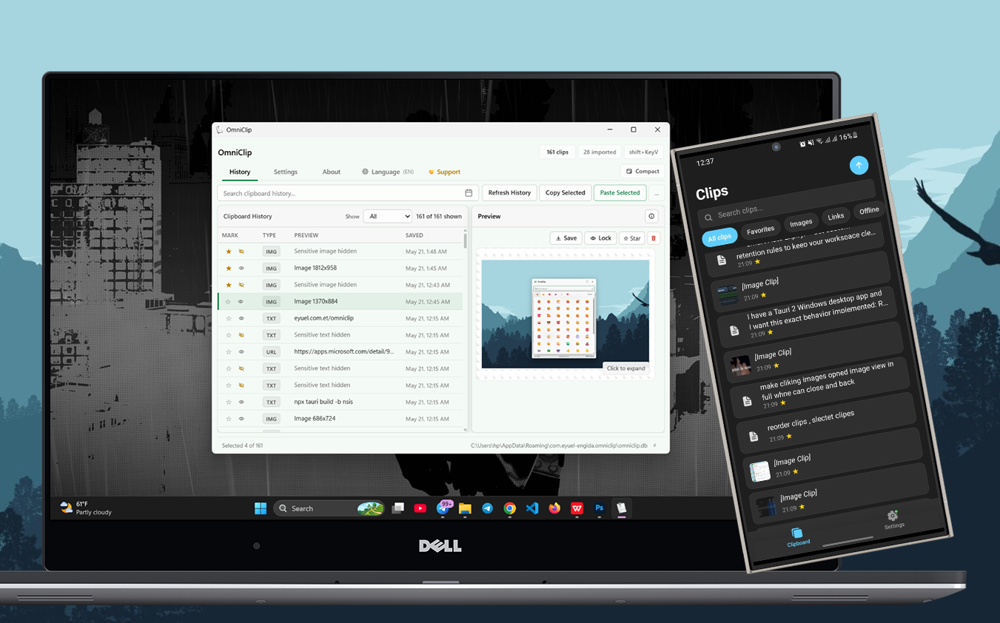

Local WiFi Sync
Clipboard syncs instantly between PC and phone over your home or office WiFi. Zero cloud, zero latency.
OmniClip keeps a persistent clipboard history on your Windows PC and syncs it wirelessly to your Android phone. No cloud servers, no internet required - everything stays on your local network.

A unified clipboard manager designed for speed, privacy, and seamless cross-device workflows.
Clipboard syncs instantly between PC and phone over your home or office WiFi. Zero cloud, zero latency.
Auto-detect passwords and tokens, lock them behind a master password, and unlock with Windows Hello biometrics.
Copy screenshots, photos, and files on your PC - see them instantly on your phone with full-resolution preview.
Search across your entire clipboard history instantly. Filter by type - text, URLs, images, or favorites.
Choose from Slate Glass, Aurora, Nordic Ink, Solar Sand, and more - each with dark and light mode support.
Access your clipboard with a global hotkey, paste directly into any app, and manage everything from the system tray.
Swipe through the Android companion app - your clipboard history, always at your fingertips.
Download the desktop app from the Microsoft Store and the Android companion APK below.
Install via the Microsoft Store for auto-updates, or download standalone binaries.
Choose the correct version for your phone's processor to install the companion app.
Are you a developer?
Quick answers to the most common questions about OmniClip.
Have feedback, found a bug, or want to request a feature? Reach out via any of these channels.
If OmniClip improves your daily workflow, consider buying a coffee to fund continued development.
☕ Buy me a coffee